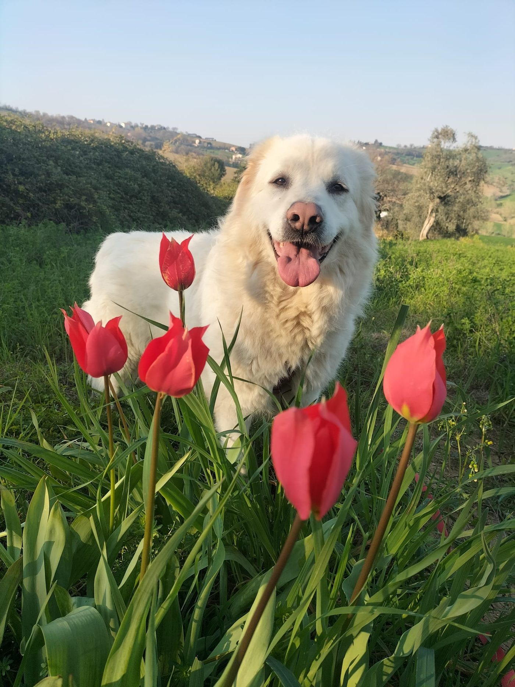
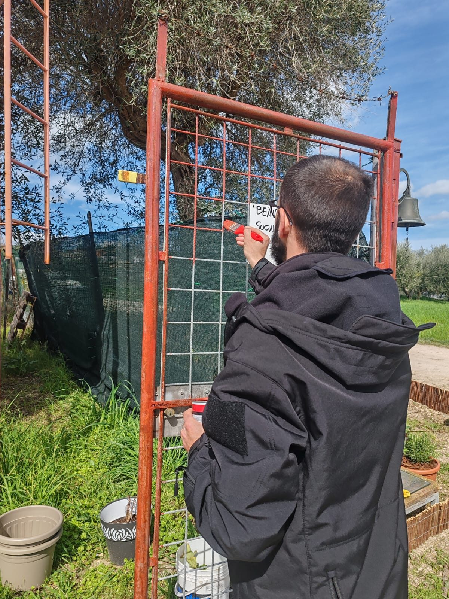
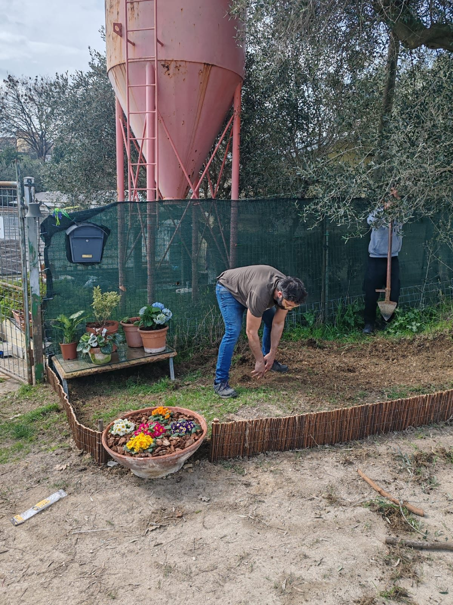
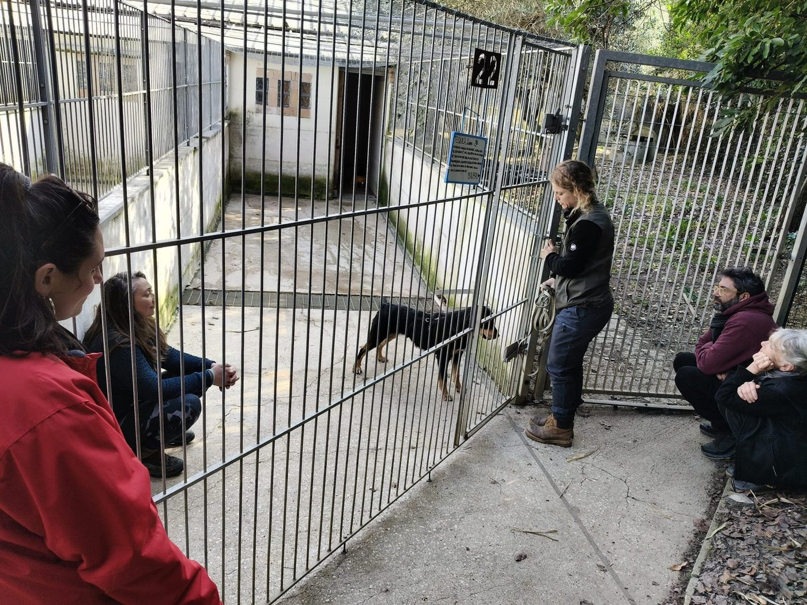

Impronte ODV è l'associazione che ogni giorno salva, cura e dà una nuova possibilità a cani e gatti in difficoltà. Abbandoni, maltrattamenti, emergenze: noi ci siamo.

Interveniamo in situazioni di abbandono, maltrattamento, emergenze sanitarie e cucciolate indesiderate. Accogliamo animali spesso in condizioni critiche e li accompagniamo in un percorso di recupero fatto di cure, tempo e pazienza.
Soccorriamo cani e gatti abbandonati, malati o segnati da storie difficili. Garantiamo cure veterinarie, terapie e supporto costante per riportarli a una vita dignitosa.
Ci occupiamo di sterilizzazioni, gestione delle colonie feline e sensibilizzazione sul territorio per prevenire abbandoni, randagismo e "cucciolate indesiderate".
Lavoriamo perché ogni animale trovi una famiglia davvero adatta a lui. Accompagniamo gli adottanti prima e dopo l'adozione con il nostro supporto continuo.
Non solo cure mediche: un luogo dove ogni animale possa sentirsi al sicuro.
Accanto alle cure mediche, lavoriamo ogni giorno per migliorare gli spazi in cui vivono i nostri ospiti, attraverso interventi di manutenzione e ristrutturazione del canile, per garantire ambienti più sicuri, puliti e sereni.
Tutto questo è possibile grazie al lavoro dei volontari e al sostegno di chi sceglie di aiutarci. Con il tuo contributo possiamo continuare a garantire cibo, cure e una nuova possibilità a ogni animale che accogliamo.



Sostituite i trattini con i numeri reali quando li avete
Ogni gesto conta. Scegli quello che senti più tuo.
Abbiamo tanti cani e gatti che aspettano: dai cuccioli agli adulti. Puoi adottare fisicamente o scegliere l'adozione a distanza se non puoi accoglierli in casa.
Con 1€ al mese tramite Teaming diventi parte concreta di tutto quello che facciamo. Oppure contribuisci con una donazione diretta a tua scelta o con il 5×1000.
Cerchiamo persone — non perfette, non esperte — ma presenti. Pulire i box, fare mercatini, organizzare eventi, costruire. C'è spazio per tutti.
Mercatini solidali, giornate di adozione, iniziative sul territorio.